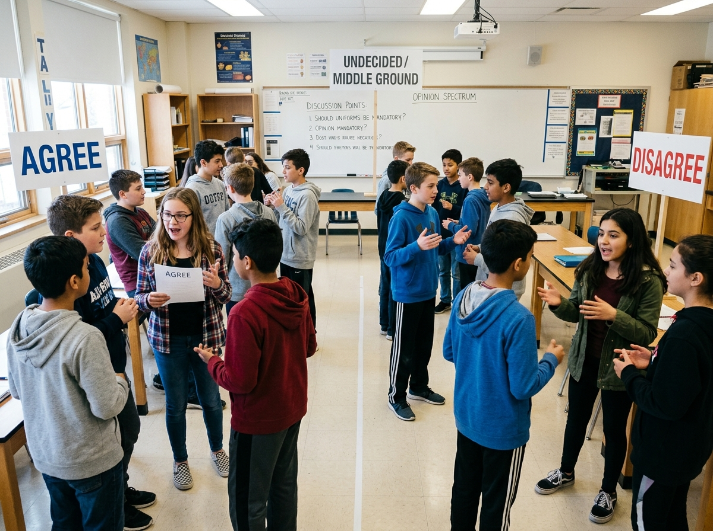
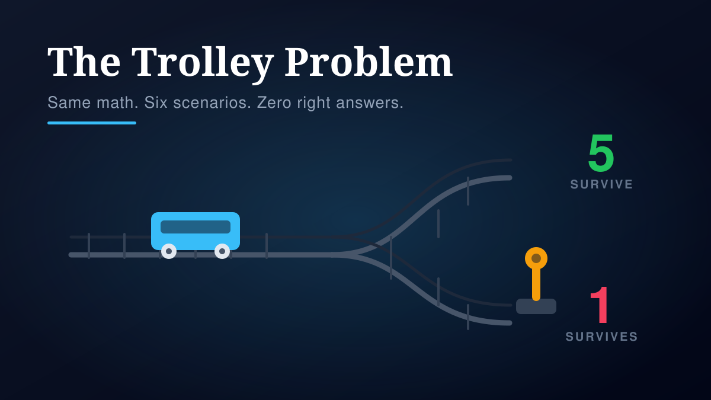
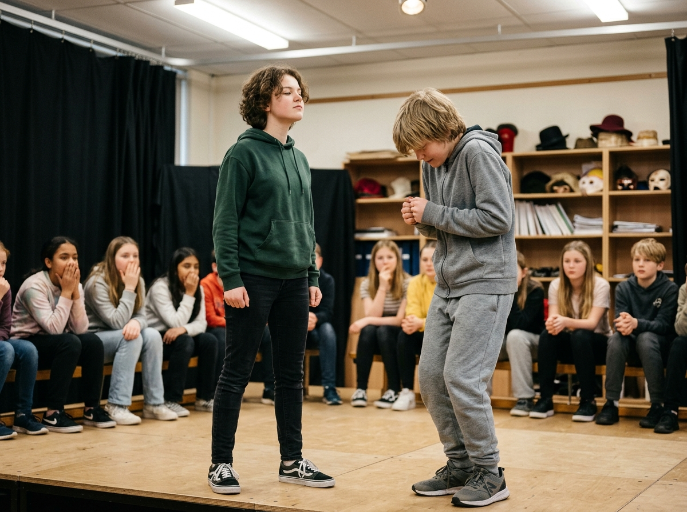

The Great Debate Walk
Opinion spectrum, kinesthetic argumentation and perspective-taking across a structured debate rotation.
Discussion & Argumentation · 1-Day Activity #11
1-Day Discussion / Ethical Reasoning
Grade Level: Grade 7–9
Resources: Projector deck, printed student sheets, profile cards
Recommended Duration: 50–60 minutes
Inquiry Framework: Discussion & Argumentation

The trolley problem family is unusually well suited to adolescent reasoning because it holds the arithmetic constant and varies only the mechanism. That design lets a class discover, in real time and about themselves, that moral intuition is not a mush of competing impulses but a set of rules — and that the rules can be named, compared and stress-tested.
The instructional payload is not 'the answer.' It is the gap between the Switch and the Footbridge: identical numbers, identical outcomes, radically different verdicts. Once students see that their own class produced a consistent swing based on nothing but how the outcome was achieved, the conversation shifts from 'what do you think' to 'what rule are you actually using.' That shift is where ethical reasoning becomes an academic object rather than a matter of temperament.
A second design feature is deliberate: the teacher never signals approval or disapproval. Because the room votes before it argues, and because the facilitator visibly declines to rank positions, students discover that disagreement here is not a failure of the activity. Without that neutrality the exercise becomes a referendum on the teacher's character, and the quieter half of the room stops participating.
These core framing questions anchor student curiosity and guide reasoning throughout the period:
'If the outcome is identical, why does the method change my answer?'
'Am I actually deciding by numbers, or am I deciding by something else and using numbers to justify it?'
'What is the rule I would need to state out loud for my answer to be consistent across all three scenarios?'
'Who decides, and does the identity of the decider change the decision?'
Explicit provincial curriculum outcomes central to unit design:
Integrated Subject Areas: ELA / FLA, Citizenship, Healthy Living, Social Studies
Four short norms are stated before any scenario is presented, because without them the activity degrades into either silence or loophole-hunting:
Stated explicitly and early. The assessed skill is articulation of reasoning. This sentence alone is what allows hesitant students to participate, and it must be said out loud rather than implied.
Someone will ask 'why not untie them, shout, or call someone.' Acknowledge the creativity, then invoke the rules of the hypothetical: one choice, from the scenario as written. Without this, a single clever student can absorb the entire period. A persistent symmetry assumption — all parties identical in every relevant respect — is held on the board throughout.
Two permitted formulations only: 'I see it differently because…' and 'that's a fair point, but…' Practised before the first vote, not after the first conflict.
Facilitator neutrality is a pedagogical instrument, not mere neutrality of manner. Presenting frameworks without ranking them is what converts opinion into analysis.
| Phase / Stage | Duration | Instructional Activities & Milestones |
|---|---|---|
| Ground Rules & Setup | 3–4 min | Four norms stated and rehearsed. Symmetry assumption posted. No scenario yet. |
| Scenario 1: The Switch | 4–5 min | Silent hand vote before any discussion. Count into the on-screen record. Expect a strong majority to pull the lever. No teacher reaction. |
| Pair Talk | 4–5 min | Students articulate reason, not choice, to a partner. Facilitator circulates and identifies one outcome-only reasoner and one fairness-only reasoner for later naming. |
| Scenario 2: The Footbridge | 4–5 min | Identical vote mechanics. The recorded swing between Scenario 1 and Scenario 2 is the central teaching artifact of the lesson. |
| Scenario 3: The Surgeon | 4–5 min | Mechanism shifted again. Verdicts typically collapse toward refusal, demonstrating that the arithmetic was never the operative variable. |
| The Pattern — Consensus Diagnostic | 5–6 min | Class votes are displayed as a three-way comparison. Facilitator redirects the 'everyone's different, so it doesn't matter' collapse by naming the consistency: answers changed when the how changed. |
| Naming the Frameworks | 7–8 min | Consequentialism, deontology, and virtue/care ethics introduced as labels for positions students already held. Each framework then applied back to the Surgeon. |
| Small-Group Dilemma | 10 min | Lifeboat with assigned profile cards, or Heinz dilemma in split Yes / No / Can't Decide groups. Groups must produce a decision and the rule used. |
| Report-Back & Small-Stakes Round | 5–6 min | One sentence per group. Then everyday-scale dilemmas, which students consistently find harder despite far smaller stakes — itself a diagnostic. |
| Exit Ticket | 4 min | 'I used to think… now I think… the lens I'm using is…' Collected ungraded; used to seed the following lesson. |
The companion projector deck maintains a persistent class record panel: a running tally for each of the three headline scenarios, displayed simultaneously rather than discarded after each vote.
This is the single most important design decision in the activity. Most trolley lessons show each vote, react, and move on — which destroys the evidence. By keeping Scenarios 1, 2 and 3 visible together, the class can see its own inconsistency rendered as a bar chart in real time, and the discussion shifts from assertion to interpretation. A derived gap callout computes the percentage-point swing between the Switch and Footbridge verdicts and converts it into the lesson's central question.
The tally is not student-facing technology. Votes are taken by raised hands and entered by the facilitator, which keeps the activity viable on a cart of shared Chromebooks and keeps the teacher's attention on the room rather than on a dashboard.
The deck carries a built-in grade toggle that alters scenario wording, framework vocabulary and small-group complexity without changing the underlying structure — allowing one lesson to be delivered twice in a day.
Frameworks presented as three plain questions: 'Does it end well?', 'Is the act right?', 'What would a good person do?' — no philosopher names.
Scenarios use shorter, more concrete wording with fewer qualifying clauses.
Profile cards frame the mandate as arguing for one specific person rather than for a category.
Frameworks named formally — consequentialism, deontology, virtue and care ethics — with utilitarianism and Kantian duty referenced as lineage.
Scenarios add consent, scheduling and legality to the Surgeon so the case is genuinely contestable rather than a cartoon.
Extension asks students to state which framework their own peer group actually used.
How this learning experience deliberately engages the whole adolescent learner:
Detecting an inconsistency in one's own reasoning, holding a position against counter-argument, and retrofitting a formal framework onto a felt intuition.
Public commitment before discussion, structured adversarial pairing, and advocacy assigned by role card so students must argue for someone they did not choose.
Standing hand votes held open long enough to be visibly counted and compared against a prior vote, converting an abstract position into a bodily, observable act.
Live vote comparison: the three-scenario record is an instantaneous diagnostic of whether a class reasons from outcomes, from rules, or from relationship — and is visible to students as evidence, not as a judgement.
Circulation notes: the facilitator flags one outcome-only reasoner and one relationship-only reasoner during pair talk, then calls on both by name at the frameworks stage.
Group deliverable: each small group must produce a decision and the rule used to reach it. Groups converge on names far more readily than on justification, so the rule is the assessed object.
Exit ticket: ungraded, collected at the door. Sorted afterward into changed my mind / hardened my view / now I can name it — the third category is the measure of framework uptake and seeds the next lesson.
"The classic failure is the discussion collapsing into 'there's no right answer so who cares.' The counter is not an assertion — it is the pattern. Point at the class record: 'you changed your answer when the how changed, not when the how many changed. Something in your reasoning is doing consistent work. That's not nothing — that's a rule, and rules can be named.'
Do not rescue the room after the Footbridge vote. The silence is doing the work; count to three before speaking.
Avoid pressing for the 'most defensible' answer too early — it teaches students to hunt for the teacher's preference, which is the opposite of the intended skill.
Timing is the main risk. If the block runs short, cut the Surgeon and move directly from the Footbridge to the pattern; the Switch-to-Footbridge gap carries the lesson alone.
The scenario set, the symmetry-assumption requirement and the Switch-to-Footbridge gap as the core pedagogical payload are all drawn from published classroom practice rather than invented for this activity.
Note on classroom data: adolescents frequently prove more outcome-driven than adults in these exercises. A room more willing to pull the lever than expected is the expected result, not an anomaly — and it makes the Footbridge swing more striking when it arrives.
The Great Debate Walk and this activity form a natural two-part sequence: opinion-spectrum movement first, then structured ethical case analysis.

Opinion spectrum, kinesthetic argumentation and perspective-taking across a structured debate rotation.

Examining how power and social position shape who gets heard — a natural extension into ethics of decision-making.
Committing publicly before hearing argument is what makes the later reversal visible. A student who has not yet declared a position can absorb any counter-argument without discomfort — which means the discussion teaches nothing.
Displaying all three scenarios together converts a series of isolated opinions into a single dataset the class must explain. The moment the bars are visible, 'it's subjective' stops being available as an answer.